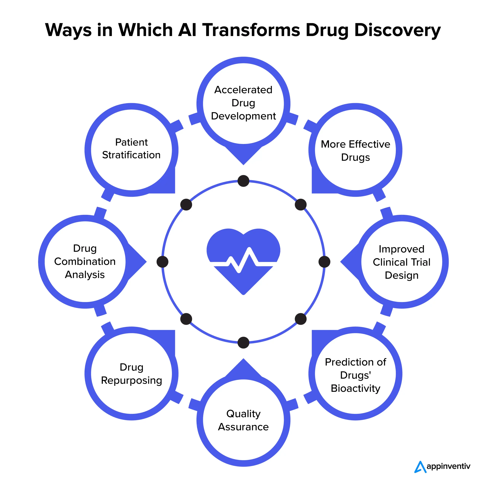

How AI is Reshaping Healthcare
Artificial Intelligence is increasingly embedded in medical practice, offering faster insights and more personalized care. Below are several representative applications:

Overview: AI applications across various medical fields
- Smart Diagnostics: Algorithms analyze X-rays and MRIs to highlight anomalies such as fractures or tumors earlier than traditional methods.(World Economic Forum)
- Accelerated Drug Research: Machine learning shortens the timeline of pharmaceutical discovery by processing huge biomedical datasets.(St. George's University)
- Tailored Therapies: AI systems recommend treatment plans based on patient-specific genetic and clinical information.(NIH)
- Virtual Assistants: Chatbots manage routine tasks such as scheduling, billing, and answering FAQs, freeing staff for complex care.(Aidoc)

Deep Dive: How AI accelerates and improves drug discovery
Collectively, these innovations enhance accessibility, reduce costs, and contribute to better patient outcomes.